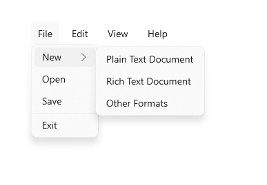

Menu flyout and menu bar
Menu flyouts are used in menu and context menu scenarios to display a list of commands or options when requested by the user. A menu flyout shows a single, inline, top-level menu that can have menu items and sub-menus. To show a set of multiple top-level menus in a horizontal row, use menu bar (which you typically position at the top of the app window).

Is this the right control?
See menus and context menus for help identifying menu vs. context menu scenarios and guidance on when to use menu flyout vs. command bar flyout.
Menu flyouts can be used as menus and context menus to organize commands. To display arbitrary content, such as a notification or confirmation request, use a dialog or a flyout.
If a particular command will be used frequently and you have the space available, see collection commanding for examples on placing a command directly in its own element so that users don't have to go through a menu to get to it.
Create a menu flyout
- Important APIs: MenuFlyout class, ContextFlyout property, FlyoutBase.AttachedFlyout property
The WinUI 3 Gallery app includes interactive examples of most WinUI 3 controls, features, and functionality. Get the app from the Microsoft Store or get the source code on GitHub
To create a menu flyout, you use the MenuFlyout class. You define the contents of the menu by adding MenuFlyoutItem, MenuFlyoutSubItem, ToggleMenuFlyoutItem, RadioMenuFlyoutItem and MenuFlyoutSeparator objects to the MenuFlyout.
These objects are for:
- MenuFlyoutItem—Performing an immediate action.
- MenuFlyoutSubItem—Containing a cascading list of menu items.
- ToggleMenuFlyoutItem—Switching an option on or off.
- RadioMenuFlyoutItem—Switching between mutually-exclusive menu items.
- MenuFlyoutSeparator—Visually separating menu items.
This example creates a MenuFlyout and uses the ContextFlyout property, a property available to most controls, to show the MenuFlyout as a context menu.
<Rectangle
Height="100" Width="100">
<Rectangle.ContextFlyout>
<MenuFlyout>
<MenuFlyoutItem Text="Change color" Click="ChangeColorItem_Click" />
</MenuFlyout>
</Rectangle.ContextFlyout>
<Rectangle.Fill>
<SolidColorBrush x:Name="rectangleFill" Color="Red" />
</Rectangle.Fill>
</Rectangle>
private void ChangeColorItem_Click(object sender, RoutedEventArgs e)
{
// Change the color from red to blue or blue to red.
if (rectangleFill.Color == Windows.UI.Colors.Red)
{
rectangleFill.Color = Windows.UI.Colors.Blue;
}
else
{
rectangleFill.Color = Windows.UI.Colors.Red;
}
}
The next example is nearly identical, but instead of using the ContextFlyout property to show the MenuFlyout class as a context menu, the example uses the FlyoutBase.ShowAttachedFlyout property to show it as a menu.
<Rectangle
Height="100" Width="100"
Tapped="Rectangle_Tapped">
<FlyoutBase.AttachedFlyout>
<MenuFlyout>
<MenuFlyoutItem Text="Change color" Click="ChangeColorItem_Click" />
</MenuFlyout>
</FlyoutBase.AttachedFlyout>
<Rectangle.Fill>
<SolidColorBrush x:Name="rectangleFill" Color="Red" />
</Rectangle.Fill>
</Rectangle>
private void Rectangle_Tapped(object sender, TappedRoutedEventArgs e)
{
FlyoutBase.ShowAttachedFlyout((FrameworkElement)sender);
}
private void ChangeColorItem_Click(object sender, RoutedEventArgs e)
{
// Change the color from red to blue or blue to red.
if (rectangleFill.Color == Windows.UI.Colors.Red)
{
rectangleFill.Color = Windows.UI.Colors.Blue;
}
else
{
rectangleFill.Color = Windows.UI.Colors.Red;
}
}
Icons
Consider providing menu item icons for:
- The most commonly used items.
- Menu items whose icon is standard or well known.
- Menu items whose icon well illustrates what the command does.
Don't feel obligated to provide icons for commands that don't have a standard visualization. Cryptic icons aren't helpful, create visual clutter, and prevent users from focusing on the important menu items.

<MenuFlyout>
<MenuFlyoutItem Text="Share" >
<MenuFlyoutItem.Icon>
<FontIcon Glyph="" />
</MenuFlyoutItem.Icon>
</MenuFlyoutItem>
<MenuFlyoutItem Text="Copy" Icon="Copy" />
<MenuFlyoutItem Text="Delete" Icon="Delete" />
<MenuFlyoutSeparator />
<MenuFlyoutItem Text="Rename" />
<MenuFlyoutItem Text="Select" />
</MenuFlyout>
Tip
The size of the icon in a MenuFlyoutItem is 16x16px. If you use SymbolIcon, FontIcon, or PathIcon, the icon automatically scales to the correct size with no loss of fidelity. If you use BitmapIcon, ensure that your asset is 16x16px.
Light dismiss
Light dismiss controls such as menus, context menus, and other flyouts, trap keyboard and gamepad focus inside the transient UI until dismissed. To provide a visual cue for this behavior, light dismiss controls on Xbox will draw an overlay that dims the visibility of out of scope UI. This behavior can be modified with the LightDismissOverlayMode property. By default, transient UIs will draw the light dismiss overlay on Xbox (Auto) but not other device families. You can choose to force the overlay to be always On or always Off.
<MenuFlyout LightDismissOverlayMode="Off" />
Create a menu bar
- Important APIs: MenuBar class. MenuBarItem class
The WinUI 3 Gallery app includes interactive examples of most WinUI 3 controls, features, and functionality. Get the app from the Microsoft Store or get the source code on GitHub
You use the same elements to create menus in a menu bar as in a menu flyout. However, instead of grouping MenuFlyoutItem objects in a MenuFlyout, you group them in a MenuBarItem element. Each MenuBarItem is added to the MenuBar as a top level menu.

Note
This example shows only how to create the UI structure, but does not show implementation of any of the commands.
<muxc:MenuBar>
<muxc:MenuBarItem Title="File">
<MenuFlyoutSubItem Text="New">
<MenuFlyoutItem Text="Plain Text Document"/>
<MenuFlyoutItem Text="Rich Text Document"/>
<MenuFlyoutItem Text="Other Formats..."/>
</MenuFlyoutSubItem>
<MenuFlyoutItem Text="Open..."/>
<MenuFlyoutItem Text="Save"/>
<MenuFlyoutSeparator />
<MenuFlyoutItem Text="Exit"/>
</muxc:MenuBarItem>
<muxc:MenuBarItem Title="Edit">
<MenuFlyoutItem Text="Undo"/>
<MenuFlyoutItem Text="Cut"/>
<MenuFlyoutItem Text="Copy"/>
<MenuFlyoutItem Text="Paste"/>
</muxc:MenuBarItem>
<muxc:MenuBarItem Title="View">
<MenuFlyoutItem Text="Output"/>
<MenuFlyoutSeparator/>
<muxc:RadioMenuFlyoutItem Text="Landscape" GroupName="OrientationGroup"/>
<muxc:RadioMenuFlyoutItem Text="Portrait" GroupName="OrientationGroup" IsChecked="True"/>
<MenuFlyoutSeparator/>
<muxc:RadioMenuFlyoutItem Text="Small icons" GroupName="SizeGroup"/>
<muxc:RadioMenuFlyoutItem Text="Medium icons" IsChecked="True" GroupName="SizeGroup"/>
<muxc:RadioMenuFlyoutItem Text="Large icons" GroupName="SizeGroup"/>
</muxc:MenuBarItem>
<muxc:MenuBarItem Title="Help">
<MenuFlyoutItem Text="About"/>
</muxc:MenuBarItem>
</muxc:MenuBar>
UWP and WinUI 2
Important
The information and examples in this article are optimized for apps that use the Windows App SDK and WinUI 3, but are generally applicable to UWP apps that use WinUI 2. See the UWP API reference for platform specific information and examples.
This section contains information you need to use the control in a UWP or WinUI 2 app.
MenuBar requires Windows 10, version 1809 (SDK 17763) or later, or WinUI 2.
The MenuFlyout and MenuBar controls for UWP apps are included as part of WinUI 2. For more info, including installation instructions, see WinUI 2. APIs for these controls exist in both the Windows.UI.Xaml.Controls and Microsoft.UI.Xaml.Controls namespaces.
- UWP APIs: MenuFlyout class, MenuBar class, ContextFlyout property, FlyoutBase.AttachedFlyout property
- WinUI 2 Apis: MenuBar class, ContextFlyout property, FlyoutBase.AttachedFlyout property
- Open the WinUI 2 Gallery app and see MenuBar in action. The WinUI 2 Gallery app includes interactive examples of most WinUI 2 controls, features, and functionality. Get the app from the Microsoft Store or get the source code on GitHub.
We recommend using the latest WinUI 2 to get the most current styles and templates for all controls. WinUI 2.2 or later includes a new template for these controls that uses rounded corners. For more info, see Corner radius.
To use the code in this article with WinUI 2, use an alias in XAML (we use muxc) to represent the Windows UI Library APIs that are included in your project. See Get Started with WinUI 2 for more info.
xmlns:muxc="using:Microsoft.UI.Xaml.Controls"
<muxc:MenuFlyout />
<muxc:MenuBar />